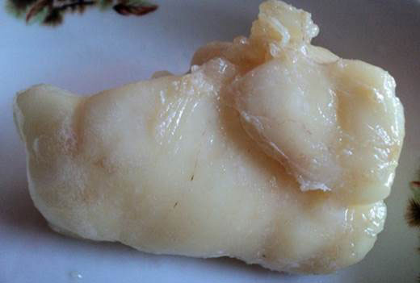

GS.TS Đào Thiện Hải – Bác sĩ Tim mạch nổi tiếng hàng đầu tại Việt Nam được biết đến với phương pháp điều trị cao huyết áp không cần dùng thuốc. Theo ông: “BẤT KỲ AI CŨNG CÓ THỂ TỰ LÀM SẠCH MẠCH MÁU TẠI NHÀ ĐỂ NÂNG CAO SỨC KHỎE”. Việc làm sạch như vậy sẽ giúp loại bỏ áp lực trên thành mạch, ổn định huyết áp và chữa khỏi 9 bệnh nan y cho con người.
Giáo sư Đào Thiện Hải rất ít khi trả lời phỏng vấn trước truyền thông. Vì ông chỉ muốn chuyên tâm vào công việc nghiên cứu và điều trị cho các bệnh nhân. Nhưng hôm nay, nhóm phóng viên của chúng tôi thật may mắn khi được giáo sư bớt chút thời gian để trả lời một số câu hỏi nhỏ cho bệnh nhân trên toàn quốc không có cơ hội đăng ký khám trực tiếp.
Bài viết dưới đây sẽ chúng tôi giúp cho độc giả giải quyết được 4 câu hỏi lớn liên quan đến bí quyết làm sạch mạch máu:
- Sống đến 120 tuổi mà không cần dùng thuốc!
- Tại sao các bệnh lý mãn tính đều liên quan đến mạch máu bẩn?
- Dấu hiệu nhận biết mạch máu bị nhiễm bẩn?
- Các phương pháp giúp làm sạch mạch máu hiệu quả?
Phóng viên: Có thông tin cho rằng mạch máu bẩn là nguyên nhân chính dẫn đến cái chết của hàng triệu người mỗi năm. Ông có ý kiến gì về nhận định này không?
Giáo sư Đào Thiện Hải:
Tôi sẽ cung cấp cho bạn một số dữ liệu rất trực quan để giúp bạn hiểu rõ hơn về vấn đề này. Theo thống kê của Tổ chức Y tế thế giới ghi nhận có khoảng 6,5 triệu người tử vong mỗi năm do đột quỵ. Tức là cứ trung bình mỗi 6 giây có một ca tử vong vì đột quỵ. Nguyên nhân chính gây đột quỵ chủ yếu là do tắc mạch máu vì cholesterol trên thành mạch tích tụ lâu ngày không được làm sạch. Không chỉ gây ảnh hưởng đến tính mạng, mạch máu bẩn còn là nguyên nhân chính gây ra các bệnh lý tim mạch mãn tính ảnh hưởng nghiêm trọng đến sức khỏe con người. 94% trường hợp không thể sống quá 80 tuổi.
CHOLESTEROL ĐÃ HỦY HOẠI SỨC KHỎE CỦA CON NGƯỜI. NẾU KHÔNG CÓ CHOLESTEROL TRONG MẠCH MÁU THÌ CON NGƯỜI CÓ THỂ SỐNG ĐẾN 120 TUỔI.
Phóng viên: Ông có thể giải thích cho độc giả biết Cholesterol là gì? Và trông nó như thế nào không?
Giáo sư Đào Thiện Hải:
Tôi sẽ không đưa ra mô tả về chất này ở đây, vì nó đã được viết trong sách giáo khoa y khoa. Hãy để tôi nói một cách đơn giản cho các bạn dễ tưởng tượng: Cholesterol giống phần mỡ thừa còn sót lại trong một chiếc chảo chưa được rửa sạch sau bữa tối. Những mảng mỡ trắng bám trên chiếc chảo chính là hình ảnh chính xác nhất để mô tả về cholesterol trong mạch máu.
Khi chất này tích tụ và bám trên thành mạch máu đầu tiên có thể khiến cho kích thước mạch máu tăng nhẹ (trong 20-25 năm), sau đó lớp cholesterol sẽ làm biến dạng mạch máu (trong 25-40 năm tiếp theo). SAU 40 NĂM, CHOLESTEROL SẼ SẼ LÀM ẢNH HƯỞNG ĐẾN TỐC ĐỘ VẬN CHUYỂN MÁU TRÊN CƠ THỂ. Để đối phó với điều này, tim không còn cách nào khác ngoài tăng áp lực bơm máu gây ra tình trạng cao huyết áp. Điều này giải thích vì sao 80% người cao tuổi ở Việt Nam mắc cao huyết áp. Nhưng đây vẫn chưa phải là biến chứng nguy hiểm nhất!
Biến chứng nguy hiểm hơn cả là khi cholesterol làm tắc nghẽn mạch máu. Kết quả sẽ làm suy giảm nguồn cung cấp máu đến cơ quan trong cơ thể. Từ đó dẫn đến hàng loạt các bệnh lý mã tính nghiêm trọng khác như: đau đầu, đau lưng, đau cổ vai gáy, đau nhức chân, hoa mắt, chóng mặt, đãng trí…
Nói một cách khác thì con người muốn khỏe mạnh hay không phụ thuộc rất nhiều vào sức khỏe mạch máu trong cơ thể. Nếu mạch máu bị tắc nghẽn ở khu vực chi dưới sẽ đến sưng đau, phù nề vĩnh viễn ở chân. Nếu mạch máu ở gan bị nhiễm bẩn sẽ gây ra tình trạng gan nhiễm mỡ và xơ gan. Nếu mạch máu ở khớp sẽ dẫn đến bệnh lý viêm khớp, thoái hóa khớp và thoái hóa cột sống…Nếu mạch máu ở mắt bị tắc nghẽn sẽ dẫn đến tình trạng suy giảm thị lực và thậm chí là mù lòa. Mạch máu nhiễm bẩn cũng chính là nguyên nhân gây ra tình trạng lão hóa da nhanh chóng.
Không thể tránh được sự ô nhiễm mạch máu! Nó tích tụ trong mạch của mỗi người. Bụi bẩn trong mạch máu là nguyên nhân khiến da bị lão hóa nhanh chóng. ĐÓ LÀ BIỂU HIỆN CỦA CHOLESTEROL BẮT ĐẦU PHẢN ỨNG CHUỖI LÃO HÓA TRONG CƠ THỂ. Và chính sự ô nhiễm của các mạch máu đã rút ngắn tuổi thọ của một người ít hơn số tuổi mà tạo hóa ban cho anh ta. Thay vì khoảng thời gian 120 năm (đây là loại tài nguyên mà cơ thể chúng ta có), thì các bạn không thể sống đến quá 70. Đặc biệt là những người mắc bệnh tăng huyết áp thậm chí chỉ còn sống đến 40 – 50 tuổi!
Phóng viên: Ngoài Cholesterol thì còn có những chất nào có thể gây ô nhiễm mạch máu nữa không?
Giáo sư Đào Thiện Hải:
Cholesterol không phải là thủ phạm duy nhất gây tắc nghẽn và ô nhiễm mạch máu còn có 2 chất nữa rất nguy hiểm tích tụ tại thành mạch đó là:
Huyết khối
Nếu cholesterol giống chất béo, thì khối huyết khối (cục máu đông) lại giống với miếng pho mát. Sự tích tụ huyết khối hình thành trên thành trong của mạch máu thậm chí còn cao hơn với cholesterol. KHI HUYẾT KHỐI XUẤT HIỆN CÓ THỂ GÂY ÁCH TẮC MẠCH MÁU LÀM CHO MÁU KHÔNG ĐƯỢC VẬN CHUYỂN ĐẾN NÃO VÀ TIM DẪN ĐẾN BIẾN CHỨNG NGUY HIỂM. Càng lớn tuổi, nguy cơ hình thành cục máu đông càng cao. Đây là lý do tại sao những người lớn tuổi thường bị ngã vì đột quỵ hoặc đau tim.
Tinh thể canxi vôi hóa
Đây là muối của kim loại nặng, thủy ngân, các chất hóa học khác nhau được tích tụ trong môi trường sống của chúng ta. Ví dụ, nếu một người làm việc trong lĩnh vực sản xuất công nghiệp độc hại, thì trong máu anh ta có nguy cơ tích tụ nhiều tinh thể canxi vôi hóa này. Những chất này đã được chứng minh còn góp phần vào sự phân chia tế bào bất thường, dẫn đến ung thư. Gần 98% những người chết vì ung thư có lượng tinh thể lắng đọng trong máu cao.
Phóng viên: Làm thế nào chúng ta có thể biết được rằng mạch máu của tôi đang bị nhiễm bẩn?
Giáo sư Đào Thiện Hải:
Tôi có thể khẳng định với các bạn rằng nếu đến 50 tuổi mà chưa làm sạch mạch máu thì mạch máu của bạn chắc chắn đã bị nhiễm bẩn. Một số triệu chứng giúp bạn có thể nhận biết mạch máu bị nhiễm bẩn:
- Sưng đau khớp xương vào buổi sáng
- Hoa mắt
- Chóng mặt
- Khó ngủ vào ban đêm và buồn ngủ vào ban ngày
- Cảm thấy mệt mỏi liên tục
- Suy giảm thị lực
- Suy giảm trí nhớ
- Suy giãn tĩnh mạch
- Khó thở
- Các vấn đề thường gặp với đường tiêu hóa
- Vấn đề thừa cân…
Thậm chí khi không xuất hiện những dấu hiệu trên, các bạn cũng nên làm sạch mạch máu định kỳ hàng năm. Sức khỏe của bạn chắc chắn sẽ được cải thiện tốt hơn.
Phóng viên: Như vậy làm sạch mạch máu có thể kéo dài tuổi thọ và ổn định huyết áp cho người già?
Giáo sư Đào Thiện Hải:
Vâng chính xác là như vậy. Hiện nay, tại phòng khám của chúng tôi thường chỉ định liệu pháp làm sạch mạch máu cho tất cả các bệnh nhân trên 50 (trong một số trường hợp trên 40 tuổi). Và sau khi làm sạch, chúng tôi kiểm tra và nhận thấy: CỨ 10 NGƯỜI ĐƯỢC LÀM SẠCH MẠCH MÁU THÌ CÓ ĐẾN 9 NGƯỜI ỔN ĐỊNH ĐƯỢC HUYẾT ÁP NGAY LẬP TỨC MÀ KHÔNG CẦN ĐIỀU TRỊ. Nhiều người cho biết rằng trước đây họ có sử dụng thuốc ổn định huyết áp hàng ngày mà kết quả không được như thế này. Tất cả những gì cần thiết chỉ là làm sạch mạch máu. Không chỉ có huyết áp được ổn định mà tình trạng sức khỏe còn được cải thiện tốt hơn.
Nhưng thật không may, cách ổn định huyết áp đơn giản này lại bị chính các bác sĩ và các công ty dược phẩm thông đồng với nhau che giấu. Vì họ biết lợi nhuận thu được từ việc điều trị bệnh cao huyết áp là rất lớn. Rốt cuộc, một người bị bệnh càng lâu thì anh ta lại càng phải chi nhiều tiền thuốc hơn. Đây chính là nguồn lợi nhuận khổng lồ cho họ. Trong khi đó việc làm sạch mạch máu lại rất đơn giản, chi phí thấp khiến họ không thể kiếm chác được.
Một người hưu trí Việt Nam đã khỏi bệnh tăng huyết áp nhờ làm sạch mạch máu. Và có rất nhiều người như vậy….
Tôi muốn cho các bạn xem một bức thư của bà Vũ Thị Chang sống ở huyện miền núi của tỉnh Quảng Ninh. Từng bị bệnh viện trả về nằm chờ chết nhưng bà ấy đã không bỏ cuộc. Bản thân bà lúc ấy đã quá yếu không thể đến gặp chúng tôi trực tiếp. Vì vậy, con gái của bà đã gọi điện đến phòng khám của chúng tôi để yêu cầu được giúp đỡ. Làm thế nào ở khoảng cách xa như thế mà chúng tôi có
Các bác sĩ tại một bệnh viện địa phương đã kết luận rằng cô ấy xuống mồ. Bà con nhất quyết không bỏ cuộc. Bản thân bà cụ không thể đến gặp chúng tôi, vì vậy con gái bà đã gọi điện đến phòng khám của chúng tôi với yêu cầu giúp đỡ. Khoảng cách xa xôi khiến cho tôi không thể tiếp cận được với bệnh nhân. Tôi thậm chí không thể chẩn đoán qua điện thoại. Lúc đó, tôi chỉ khuyên cô ấy tự làm mạch máu tại nhà.
Sau 3 tháng, chính bà Chang đã viết thư cho chúng tôi! Tôi muốn cho bạn xem lá thư của bà ấy.

“Cảm ơn bác sĩ rất nhiều chính ông đã cứu sống tôi trong lúc nguy kịch nhất! Khi con gái bác sĩ, tôi thực sự đã bất tỉnh không biết gì cả. Toàn thân tê liệt, tôi chỉ biết nằm một chỗ thoi thóp qua ngày. Tôi bị nhồi máu não khi được đưa đến bệnh viện, bác sĩ sau khi kiểm tra qua loa. Họ còn không thèm điều trị cho tôi mà chỉ bảo con gái hãy mang tôi về chuẩn bị lo hậu sự. Nhưng con gái tôi đã không bỏ cuộc mà kiên quyết gọi điện thoại cho bác sĩ. Và sau đó con bé bắt đầu đưa cho tôi uống một loại thuốc mà bác sĩ gửi xuống. May mắn thay, chỉ sau 1 tuần bệnh của tôi đã có chuyển biến tốt. Đặc biệt, huyết áp ổn định không hề tăng. Tôi đã bắt đầu tỉnh táo lại được trở về từ cõi chết. Một tuần trước, tôi được con gái đi kiểm tra tại bệnh viện huyện. Khi nhận kết quả thấy các chỉ số đều tốt. Tôi thậm chí còn khỏe mạnh so với lứa tuổi của mình. Điều này khiến tôi đã rất ngạc nhiên. Cách đây chỉ vài tháng, tôi nghĩ mình đã đặt một chân xuống mồ rồi. Nhưng bây giờ tôi tự tin rằng mình chắc chắn sẽ sống. Và thậm chí còn có thể sống khỏe mạnh đến 100 tuổi. Cảm ơn bác sĩ rất nhiều vì sự giúp đỡ của bạn đã tái sinh tôi thêm một lần nữa. "
ĐÂY THỰC SỰ LÀ NHỮNG ĐIỀU “THẦN KỲ” CÓ THỂ XẢY RA SAU KHI LÀM SẠCH MẠCH MÁU. Trên thực tế không hề có phép màu nào xảy ra ở đây. Nhưng tác dụng mà nó mang lại khiến cho bạn thực sự phải nể phục.
Phóng viên: Phương pháp làm sạch mạch máu mà giáo sư nhắc ở trên là gì? Ông có thể chia sẻ chi tiết cho độc giả được biết không?
Giáo sư Đào Thiện Hải:
Phương pháp làm sạch mạch máu mà tôi nhắc đến ở trên là sử dụng một sản phẩm mới là Hypercare. Hiện nay ở Việt Nam mới chỉ có duy nhất sản phẩm này đáp ứng được nhiệm vụ làm sạch mạch máu. Hypercare được phát triển từ năm 2015 bởi Viện Tim Mạch Quốc Gia. Trong sản phẩm này có chứa khoảng 40 thành phần hoạt tính được chiết xuất từ thiên nhiên rất tốt cho hệ thống mạch máu trong cơ thể.
Trong đó thành phần quan trọng nhất phải kể đến là Nattokinase (đậu tương lên men) đây là một món ăn nổi tiếng nhất của Nhật. Chúng có khả năng làm sạch các chất ô nhiễm, cặn bẩn tích tụ trong mạch máu. Đồng thời chúng còn giúp hòa tan cholesterol, đánh bật các cục máu đông và các tinh thể canxi ra khỏi mạch máu. Nguyên liệu này lần đầu tiên được phát hiện vào năm 2007 bởi các nhà khoa học Nhật Bản. Đối với nghiên cứu trong lĩnh vực này, hai nhà khoa học Nhật Bản đã nhận được giải thưởng Nobel. Ngày nay, Nattokinase đã được ứng dụng rất nhiều trong y học thế giới.
Người Nhật từ lâu đã rất quan tâm đến việc làm sạch mạch máu sau độ tuổi 40-50. Từ năm 1965, Chương trình Quốc gia về Cải thiện Sức khỏe và Tuổi thọ được thông qua có mục tiêu khuyến khích người dân định kỳ làm sạch mạch máu hàng năm. Và hôm nay chúng ta thấy kết quả tuyệt vời của quyết định như vậy khi người dân Nhật Bản đã giữ kỷ lục về tuổi thọ nhiều năm nay. Tuổi thọ trung bình của người Nhật rất cao. Và chuyện sống đến 100 tuổi đối với người Nhật là một điều rất phổ biến. Nếu trước đây người Nhật thường làm sạch mạch máu bằng thảo mộc, tập thể dục và yoga. Thì giờ đây họ sử dụng các chế phẩm đặc biệt có tên là Hypercare.
Phóng viên: Hypercare là sản phẩm gì? Chúng ta phải dùng Hypercare bao nhiêu lâu để làm sạch được mạch máu?
Hypercare là tên của một loại thực phẩm bảo vệ sức khỏe do các nhà khoa học Nhật Bản nghiên cứu và sản xuất. Sản phẩm này có tác dụng ổn định huyết áp, giảm cholesterol, ngăn ngừa xơ vữa động mạch, huyết khối. Hỗ trợ làm sạch mạch máu cho cơ thể khỏe mạnh hơn. Nếu như trước đây để làm sạch mạch máu người ta phải mất ít nhất từ Trung bình một liệu trình dùng Hypercare để làm sạch mạch máu kéo dài 2-4 tuần. Khi kết thúc liệu trình này thì bạn cần xem xét sức khỏe của mình như thế nào. Nếu là người có sẵn các bệnh lý nền như cao huyết áp, máu nhiễm mỡ, tim mạch…Thì nên sử dụng định kì 1 năm 1 liệu trình để đảm bảo sức khỏe mạch máu.
Khi Hypercare đi vào cơ thể sẽ giúp làm tan các cặn cholesterol, cục máu đông và canxi tích tụ trên thành mạch máu. Ngoài ra nhờ chiết xuất rutin có trong thành phần còn giúp làm tăng cường độ bền và độ đàn hồi của mạch máu giúp chúng khỏe mạnh hơn. Sau 1 tháng sử dụng theo dữ liệu nghiên cứu từ nhiều bệnh nhân cho thấy các mạch máu đã trở nên sạch sẽ và phục hồi mạnh mẽ như thời 20-25 tuổi. Các mao mạch nhỏ cũng được phục hồi. Kết quả là huyết áp của bạn sẽ ngừng tăng, hết đau đầu, mất ngủ, đầu óc minh mẫn hơn…Sau khi mạch máu được làm sạch, bạn sẽ thấy sức khỏe được cải thiện một cách toàn diện.
Phục hồi các cơ quan nội tạng và khớp xương
Mạch máu được làm sạch sẽ thúc đẩy quá trình phục hồi các cơ quan nội tạng trong cơ thể. Kết quả là các bệnh tật từng mắc trước đây sẽ biến mất mà không cần dùng thuốc. Tôi lấy ví dụ như nếu trước đây tuyến tụy và lá lách của bạn bị sưng viêm gây đau. Thì sau khi làm sạch mạch máu các chất độc tố là nguyên nhân gây bệnh sẽ được đẩy ra khỏi cơ thể từ đó sẽ giúp tuyến tụy và lá lách hết đau, hết sưng viêm. Ngoài ra, các khớp xương trước đây bị khô cứng cũng được phục hồi. Tiếng lạo xạo, lục cục sẽ biết mất. Sụn khớp được tái tạo tăng cường khả năng vận động linh hoạt hơn.
Đánh tan mỡ thừa
Bạn có biết thừa cân béo phì có liên quan chặt chẽ đến tình trạng mạch máu bị bẩn. Các mạch máu bị tắc nghẽn do cholesterol sẽ làm giảm lưu lượng máu đến các cơ quan trên cơ thể người. Khi đó não bộ sẽ truyền tín hiệu nhắc nhở chúng ta phải ăn. Lúc này sẽ khiến cơ thể dư thừa năng lượng chuyển qua tích tụ chất béo. Do đó, khi chúng ta làm sạch mạch máu khôi phục lại hoạt động tuần hoàn sẽ thúc đẩy nhanh quá trình phân hủy chất béo. Và theo nghiên cứu của chúng tôi thì trung bình một người sau khi làm sạch mạch máu mỗi tháng sẽ giảm được từ 2-5kg tùy cơ địa.
Phục hồi thị lực và chống suy giảm trí nhớ
Trong thành phần của Hypercare có chứa giảo cổ lam giúp hạ mỡ máu giảm cholesterol toàn phần ngăn ngừa xơ vữa động mạch. Tăng cường lưu thông máu hỗ trợ điều trị đau đầu, hoa mắt, chóng mặt và chống suy giảm trí nhớ. Mắt bạn cũng trở nên tinh tường hơn bắt đầu có thể nhìn thấy xe bus từ xa và có thể xỏ được cả chỉ vào đầu kim bé tí.
Tăng cường khả năng sinh lý cho nam giới
Một trong những điều đáng ngạc nhiên khi sử dụng Hypercare đó là tăng cường khả năng sinh lý cho nam giới. Mạch máu sau khi được làm sạch sẽ kích thích cơ thể sản sinh ra hormone nam testosterone. Kết quả là các bệnh viêm tuyến tiền liệt đều biến mất và u xơ tuyến tiền liệt cũng chậm phát triển. Nếu bạn còn dưới 70 tuổi thì khả năng sinh lý được cải thiện và hoàn toàn có thể quan hệ tình dục trở lại được.
Hiệu ứng cánh bướm của Hypercare với sức khỏe
Hypercare tác động đến cơ thể con người theo hiệu ứng cánh bướm. Tức là sản phẩm này sẽ gây ra một chuỗi những phản ứng tự chữa lành trên các cơ quan nội tạng trên cơ thể. Bạn sẽ thấy cơ thể cải thiện sức khỏe bắt đầu sự bình thường hóa của các mạch máu và kết thúc ở việc phục hồi thị lực và xương khớp. Sau 1-3 tháng làm sạch mạch máu, cơ thể bạn sẽ như được “tái sinh” thêm lần nữa. Đồng thời, bệnh nhân sẽ cảm thấy sức khỏe được cải thiện từng ngày.
Thức dậy một cách dễ dàng
Bạn sẽ thức dậy vào buổi sáng một cách dễ dàng. Bạn ra khỏi giường với tâm trạng thoải mái không cần phải gượng ép, chà xát đôi chân cứng đờ vào nhau để khớp xương mềm ra. Ngay từ sáng bạn đã cảm thấy tràn đầy năng lượng để bắt đầu ngày mới.
Tâm trạng sảng khoái
Bạn có một giấc ngủ ngon thức dậy tràn đầy năng lượng. Bạn sẽ thấy mình tâm trạng sảng khoái đầy hứng khởi.
Thưởng thức cuộc sống
Với tâm trạng hào hứng, menu bữa sáng của bạn cũng đa dạng hơn. Nếu như trước đây bạn sẽ phải khổ sở tuân theo chế độ ăn kiêng khắc nghiệt. Thì nay bạn muốn ăn gì cũng được không còn phải lo thừa cân, béo phì hay tăng huyết áp.
Khả năng vận động được cải thiện
Khi ra khỏi nhà, bạn sẽ không còn phải lo lắng về đôi chân của mình nữa. Bạn không còn gặp khó khăn khi đi bộ nữa. Bạn có thể đi bộ từ vài trăm mét đến cả km mà không còn đau mỏi chân. Các khớp xương không còn kêu lục khục, vận động mạnh vẫn trơn tru.
Tập trung cao độ
Khi có một giấc ngủ ngon, bạn sẽ cảm thấy thư thái và tập trung hơn khi bắt đầu ngày mới. Bạn sẽ không còn những cơn đau đầu triền miên làm cho đầu óc kém minh mẫn. Khả năng ghi nhớ được cải thiện, bạn sẽ có thể bắt đầu quay lại với những sở thích trước đây.
Sự hồi phục kì diệu
Bạn sẽ cảm nhận được cơ thể có sự phục hồi kỳ diệu. Ngay cả khi thị lực của bạn bị suy giảm nghiêm trọng cũng bắt đầu hồi phục dần dần. Nếu như trước đây bạn chỉ thấy mây mờ trước mắt thì bây giờ mọi thứ trở nên rõ ràng. Bạn có thể nhìn thấy cả số xe bus từ xa và chiêm ngưỡng được cả khung cảnh thiên nhiên tươi đẹp trước mắt.
Quan trọng nhất là: BÂY GIỜ BẠN SẼ CÓ THỂ SỐNG KHỎE MÀ KHÔNG CẦN PHỤ THUỘC VÀO THUỐC. Bạn sẽ quên đi cơn ác mộng phải uống thuốc hàng ngày, hàng tuần để huyết áp ổn định. Bạn cũng không phải tốn tiền cho các hiệu thuốc để duy trì cơ thể khỏe mạnh.
SỰ KHÁM HIẾM CỦA SẢN PHẨM VÀ ƯU ĐÃI CHO KHÁCH HÀNG
Phóng viên: Nhưng theo chúng tôi được biết thì hiện nay Hypercare chưa được bán tại các hiệu thuốc? Và sản phẩm này dường như không có sẵn mà phải đăng ký mới đặt mua được? Vậy người dân Việt Nam làm thế nào để sở hữu được sản phẩm này?
Đúng là như vậy! Thật không may vì từ đầu năm nay, Hypercare đã không còn được bán tại các hiệu thuốc nữa. Nguyên nhân vì nhà sản xuất không thể đàm phán được với các hiệu thuốc. Bởi lẽ sản phẩm này có thể chữa khỏi hoàn toàn cho bệnh nhân cao huyết áp chỉ sau 1-2 liệu trình. Như vậy sẽ không còn những người mua thuốc hạ huyết áp nữa. Chính điều này sẽ dẫn đến tổn thất về mặt lợi nhuận rất nhiều. Chưa kể, chúng tôi được biết có sự can thiệp của các “thế lực ngầm” muốn ngăn chặn không cho phép Hypercare bán rộng rãi ngoài thị trường. Chính vì thế mà Hypercare chỉ được bán phổ biến ở nước ngoài và được một số phòng khám tư nhân mua lại về cung cấp nhỏ giọt cho bệnh nhân trong nước
Với mong muốn đưa Hypercare đến gần hơn với người dân Việt Nam, tôi đã quyết định phân phối một phần lô sản phẩm với giá ưu đãi giảm 50% qua hình thức bán hàng trực tuyến. Vì số lượng có hạn nên chúng tôi sẽ chọn ra 100 người may mắn nhất để nhận ưu đãi này. Để đặt mua được Hypercare, các bạn cần điền thông tin cá thông và số điện thoại vào bản đăng ký tôi để ở dưới bài viết này.
Điều kiện để tham gia chương trình mua Hypercare với giá ưu đãi:
- Là công dân Việt Nam từ 18 tuổi trở lên.
- Đặt mua Hypercare với MỤC ĐÍCH SỬ DỤNG CÁ NHÂN. Chúng tôi không bán Hypercare cho các đại lý hay hiệu thuốc với mục đích kiếm tiền vô nhân đạo.
Lưu ý: Bạn sẽ có hai lựa chọn để đăng ký đặt mua Hypercare như sau:
Để đặt hàng Hypercare khuyến mãi. Bạn hãy điền vào đơn đăng ký dưới đây. Thông tin cá nhân và số điện thoại của bạn sẽ tự động được gửi đến các chuyên gia tư vấn của phòng khám. Họ sẽ liên hệ với bạn ngay trong vòng 5 phút sau khi để lại thông tin. Tôi đã để lại cho độc giả của tạp chí một mẫu đơn đăng ký liên kết trực tiếp với phòng khám của mình dưới đây.
Đặc biệt, phòng khám hiện chỉ còn 5 hộp Hypercare được bán theo chương trình ưu đãi. Chương trình sẽ kết thúc trước ngày 04.10.2023 nên các bạn cần phải nhanh tay đăng ký ngay.